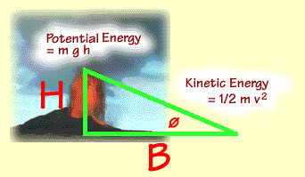

Simple Calculations
Equation Kinetic and Potential Energies
To better understand the many kinds of volcanoes, we can use some math and the laws of physics. In an eruption, you can track a "block" of volcanic material from
some point where all of its energy is potential energy and equate it at some other point where it is at a maximum of kinetic energy:

where m is the mass of the "block", g is the gravity acceleration contstant, h is the height where all energy is potential energy, and v is the velocity when the kinetic energy is at a maximum.
Assuming conservation of energy, with some algebra we can write this relationship as:
2 g h = v2
This means that if we know a height at which a volcanic flow surmounted an obstacle, we can estimate its maximum velocity at some point before or after the obstacle. This technique was used to estimate the maximum flow velocity of a landslide in Iran that climbed a 600 meter hill as well as a volcanic eruption in Japan that climbed 500 meters over a mountain pass. The estimates are supported by observations of these events.
Equation Kinetic and Potential Energies
Use the form below to calculate estimated maximum velocities for volcanic eruptions where you can document how far they have climbed (for large Plinian eriptions, some researchers use the maximum height of the eription cloud).
Note that this is a very generalized way to look at volcanic eruptions; i.e. it does not account for losses of energy due to friction nor the different mechanics for fluid flow. However, it has proven to be useful to compare different volcanoes.